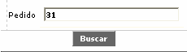
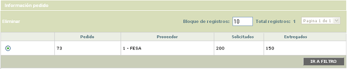
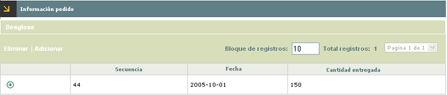
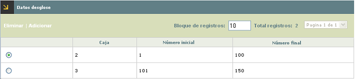
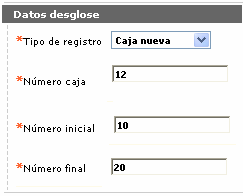
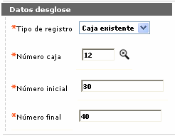
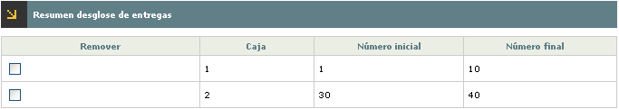

Registro de entregas |
Mediante esta opci�n que se invoca desde el formulario Inventario de pl�sticos se registran las entregas parciales o totales de pl�sticos que los proveedores hacen a la entidad como resultado de los pedidos generados.
Al ingresar a la opci�n, se muestra un filtro que le permite al usuario digitar el n�mero del pedido para el cual se van a registrar las entregas.

Por defecto, al ingresar al formulario se muestran todos los registros existentes indicando para cada uno el n�mero del mismo, el proveedor a quien se le hizo, la cantidad solicitada y la cantidad entregada.

El formulario solo contiene el hiperv�nculo Informaci�n pedido
Informaci�n pedido: si el usuario selecciona un registro e invoca el hiperv�nculo Informaci�n pedido se despliega un nuevo formulario en el cual se muestran las entregas de pl�sticos que el proveedor haya hecho a la entidad en cumplimiento del pedido efectuado, indicando la secuencia de entrega, la fecha en que se registr� y la cantidad entregada.

El formulario contiene el hiperv�nculo Desglose, que permite registrar el detalle de los pl�sticos entregados a la entidad por parte del proveedor. Adicionalmente, cuenta con las opciones Eliminar y Adicionar.
Adicionar: si el usuario invoca la opci�n Adicionar, se despliega un nuevo formulario en el cual se registran las entregas que sobre el pedido haya efectuado el proveedor. Las entregas registradas afectan autom�ticamente el campo Existencias contenido en el formulario Inventario de pl�sticos.
Descripci�n de campos
Fecha entrega |
Campo obligatorio en el que se registra en formato YYYY-MM-DD la fecha en la que el proveedor hizo entrega de los plasticos pedidos a la entidad. |
Entregados |
Este campo obligatorio permite indicar la cantidad de pl�sticos que el proveedor entreg� a la entidad. |
Desglose: si desde el formulario Informaci�n de pedidos el usuario selecciona un registro e invoca el hiperv�nculo Desglose, el sistema despliega formulario en el cual se muestran el desglose o detalle de las cajas y plasticos registrados para cada una de las entregas efectuadas por el proveedor.

Descripci�n de campos
Caja |
Indica el n�mero asignado a cada una de las cajas con los plasticos entregados por el proveedor. |
N�mero inicial |
Muestra el consecutivo inicial a partir del cual comienza el grupo de pl�sticos entregados por el proveedor para cada caja. |
N�mero final |
En este campo num�rico se despliega el consecutivo final hasta donde va el grupo de pl�sticos de cada caja que fueron entregados por el proveedor. |
El formulario cuenta con las opciones adicionar y eliminar.
Adicionar: si el actor invoca la opci�n adicionar se despliega un wizard de dos pasos en el cual la entidad puede registrar de manera detallada los n�meros de cajas o lotes y los consecutivos de los pl�sticos contenidos en ellos, que fueron entregados por el proveedor. Esta informaci�n ser� utilizada posteriormente por el sistema durante la etapa de control de inventario.
En la primera p�gina del wizard, se ingresa la informaci�n de las diferentes cajas y pl�sticos entregados para cada una de las entregas parciales efectuadas por el proveedor.

.

Descripci�n de campos
Tipo de registro |
Campo obligatorio tipo combo que contiene las opciones Caja nueva o Caja existente, para indicar si los pl�sticos a registras corresponden a alguno de los lotes ya ingresados o si es un lote nuevo. |
N�mero de caja |
En este campo obligatorio, se registra el n�mero de la caja a la que pertenecen los plasticos entregados. Dependiendo de la opci�n seleccionada en el campo anterior, este campo permite digitar informaci�n directamente o habilita una lista de valores para seleccionar la caja correspondiente. |
N�mero inicial |
Campo num�rico obligatorio en el que se indica el consecutivo inicial a partir del cual comienza el grupo de pl�sticos entregados por el proveedor. Cuando en el campo Tipo de registro se haya indicado Caja existente, este campo se llena autom�ticamente con la secuencia inmediatamente siguiente a la �ltima registrada para la caja o lote. |
N�mero final |
En este campo num�rico obligatorio, se registra el consecutivo final hasta donde va el grupo de pl�sticos entregados al proveedor. |
Despu�s de haber ingresado el desglose para una secuencia de entrega, mediante el segundo bot�n del wizard se van adicionando uno a uno los desgloses y luego al desplazarse a la segunda p�gina se muestra el resumen de todos desplegando para cada uno el modelo, la caja, n�mero inicial y n�mero final. El formulario cuenta con un check que permite marcar aquellos desgloses que ya no se desea registrar en el sistema.

El sistema controla que la cantidad total de los pl�sticos ingresados en cada desglose para una misma secuencia y pedido sea igual a la cantidad registrada como entregada para dicha secuencia. De igual manera se controla que las secuencias de los pl�sticos dentro de una misma caja y modelo no se sobrepongan entre si.
Eliminar: el sistema permite eliminar un desglose siempre y cuando ninguno de los pl�sticos pertenecientes a la caja haya sido utilizado para realce o se encuentre registrado como averiado